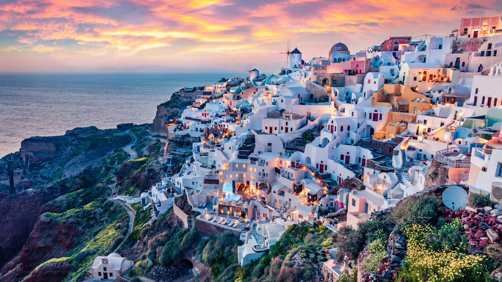
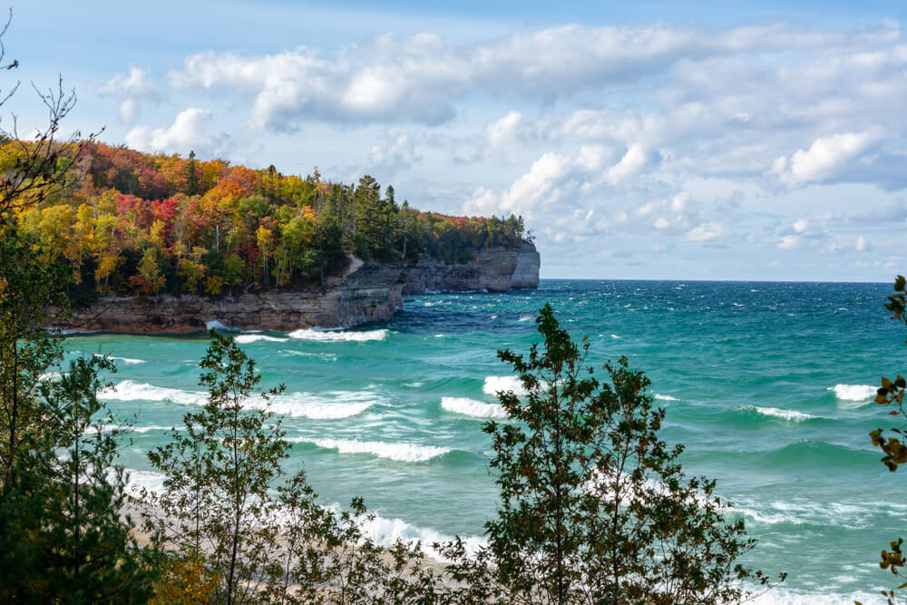

Travel Destinations
Paris, France

Discover the romantic charm of Paris, France. Known as the "City of Love," Paris offers iconic landmarks such as the Eiffel Tower, Louvre Museum, and Notre-Dame Cathedral. Stroll along the Seine River, indulge in exquisite French cuisine, and immerse yourself in the art and culture of this enchanting city.
- Must-Visit Places:
- Eiffel Tower
- Louvre Museum
- Montmartre
- Champs-Élysées
- Travel Tips:
- Try local pastries like croissants and macarons.
- Take a Seine River cruise for stunning views.
- Explore charming neighborhoods like Le Marais.
Santorini, Greece
Escape to the picturesque island of Santorini in Greece. With its stunning white-washed buildings overlooking the azure Aegean Sea, Santorini is a dreamy destination. Explore charming villages, relax on beautiful beaches, and savor delicious Greek cuisine while enjoying breathtaking sunsets.
- Must-Visit Places:
- Oia
- Fira
- Kamari Beach
- Red Beach
- Travel Tips:
- Experience a sunset in Oia for a magical view.
- Try traditional Greek dishes like moussaka and souvlaki.
- Explore the ancient ruins of Akrotiri.
Upper Peninsula, Michigan
Experience the natural beauty and outdoor adventures of Michigan's Upper Peninsula. Known for its pristine landscapes, the UP offers a perfect blend of lakes, forests, and historic sites. Whether you're a nature enthusiast or history buff, the Upper Peninsula has something for everyone.
- Must-Visit Places:
- Pictured Rocks National Lakeshore
- Tahquamenon Falls State Park
- Mackinac Island
- Porcupine Mountains Wilderness State Park
- Travel Tips:
- Explore the stunning cliffs and formations at Pictured Rocks.
- Hike or bike through the scenic trails of Porcupine Mountains.
- Indulge in fudge and enjoy horse-drawn carriage rides on Mackinac Island.